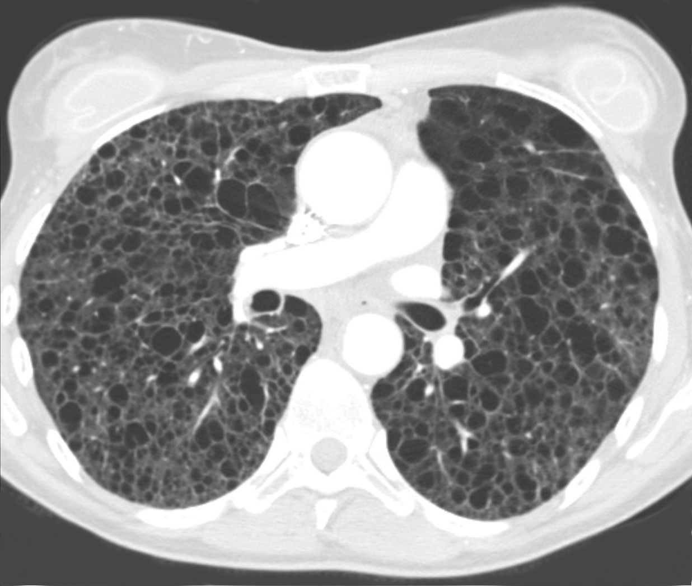

Ficha del catálogo
Linfangioleiomiomatosis
- Sistema
- Respiratorio
- Modalidad
- TC
- Región
- Tórax
- Dificultad
- Avanzado
Enfermedad quística pulmonar poco frecuente que afecta casi siempre a mujeres en edad fértil, de forma esporádica o en el contexto de esclerosis tuberosa. La proliferación de células musculares lisas anómalas destruye el parénquima y forma quistes. Debuta con disnea progresiva, neumotórax de repetición o derrame quiloso.
Técnica
Tomografía de alta resolución sin contraste, complementada con estudio abdominal cuando se busca afectación asociada.
Qué observar
- Quistes redondeados de pared fina y contornos regulares
- Distribución difusa y uniforme sin gradiente entre vértices y bases
- Parénquima conservado entre los quistes
- Volúmenes pulmonares normales o aumentados
- Neumotórax o derrame pleural quiloso como formas de presentación
- Angiomiolipomas renales en el estudio abdominal asociado
Hallazgos
Quistes de pared fina, redondeados y homogéneos, repartidos por todo el pulmón, con parénquima intercalado normal.
Perlas
Cuando los quistes son redondos, uniformes y afectan también a las bases en una mujer joven, hay que buscar angiomiolipomas renales, porque su presencia refuerza el diagnóstico y evita la biopsia.
Diagnóstico diferencial
- Histiocitosis pulmonar de células de Langerhans
- Quistes irregulares con nódulos asociados y respeto de las bases.
- Enfisema
- Espacios sin pared con vasos centrolobulillares residuales.
- Neumonía intersticial linfoide
- Quistes escasos sobre vidrio deslustrado y contexto autoinmunitario.
Simuladores
- Bronquiectasias quísticas
- Panalización avanzada
- Quistes postinfecciosos aislados
Por modalidad
- RX
- Volúmenes conservados o aumentados con patrón reticular difuso
- TC
- Establece el diagnóstico al mostrar los quistes uniformes difusos
Protocolo
Alta resolución en inspiración sin contraste, con reconstrucciones coronales y valoración de abdomen superior si está incluido.
Clasificación
Errores frecuentes
- Confundir los quistes con enfisema en una paciente joven no fumadora
- No revisar los riñones cuando aparecen quistes pulmonares difusos
- Atribuir a asma la disnea de una mujer joven con neumotórax de repetición

linfangioleiomiomatosis quistes pulmonares esclerosis tuberosa quilotorax neumotorax